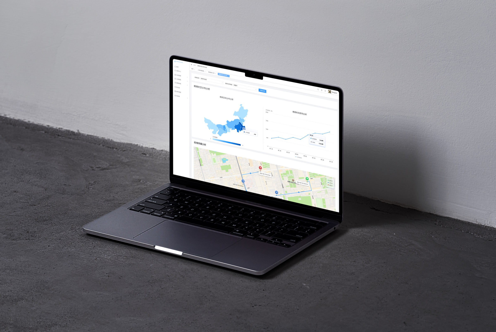
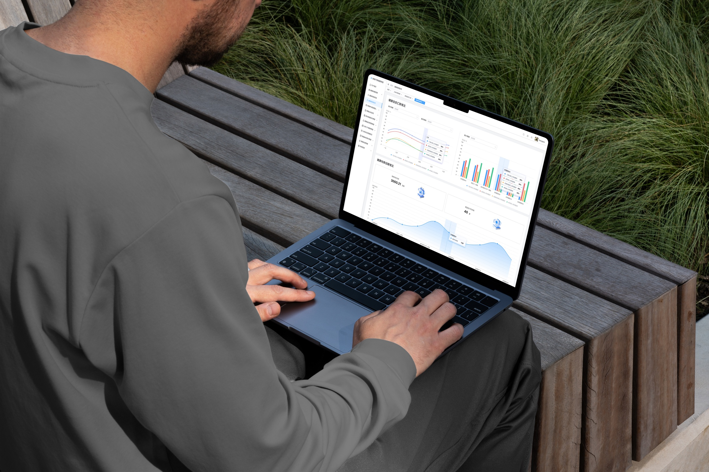
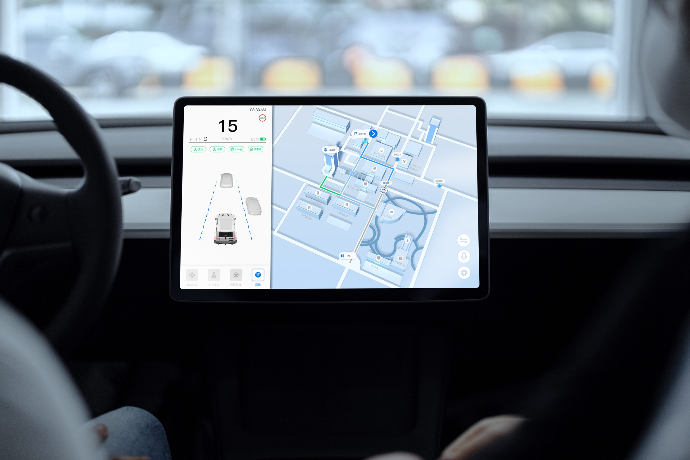

复杂业务与工作流梳理
理解不同角色、任务与业务约束，整理关键流程、信息关系与异常状态。
需求拆解信息架构流程设计
近 7 年 B 端与政企数字化产品设计经验，持续参与多角色协作、数据密集和跨终端交付的复杂项目。我从理解业务与用户任务出发，将复杂需求转化为清晰、可用并能够落地的产品体验。




理解不同角色、任务与业务约束，整理关键流程、信息关系与异常状态。
处理监测、预警、趋势和业务状态等复杂信息，建立可扫描的信息层级。
覆盖 Web 后台、数据大屏、车载 HMI、遥控驾驶舱与移动端等不同终端。
通过组件、规范、标注、切图和还原检查，帮助设计稳定进入开发与上线阶段。
先明确不同角色的任务、上下游关系与现实约束，再判断产品真正需要解决什么。
通过信息架构、关键流程和状态设计，将分散的业务信息整理成清晰可用的系统体验。
从原型和设计规范，到研发协作、还原检查与上线迭代，持续关注方案最终如何被实现。
2026.04 至今
项目制 · 远程
为企业客户提供数据可视化大屏与 B 端后台设计服务，同时整理复杂系统案例并探索 AI 辅助原型工作流。
2024.09 至 2026.03
山东浪潮数字服务 · 济南
参与医疗 SaaS、医院数据大屏与 AI 辅助诊断模块设计，覆盖挂号、问诊、处方和报告等高频医疗业务场景。
2023.03 至 2024.09
理工雷科智途 · 济南
进入矿区开展现场观察，参与车载 HMI、云控大屏和遥控驾驶舱设计，并建立跨终端界面规范。
2021.10 至 2023.01
山东中泽禹智能科技 · 济南
负责医疗急救大屏、智慧农业可视化和心理评估系统等项目，积累复杂信息与流程设计经验。
2019.03 至 2021.10
济南云乔广告传媒 · 济南
在2022冬奥电力保障项目中主要负责张家口电力指挥中心大屏设计，并作为驻场设计近3个月，期间与多家单位、冬奥项目组共同推进项目与设计交付。
我会使用 AI 辅助整理需求、探索概念、制作快速原型和检查方案，也持续练习 Blender、C4D 与动态设计。这些探索不是独立标签，而是帮助我更高效地理解问题、表达方案和完成交付。